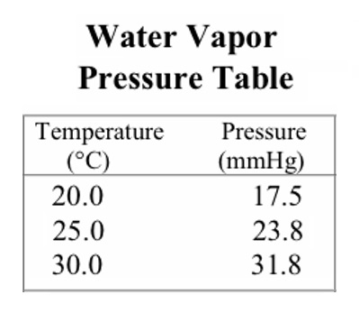

1) Under what circumstances is a gas mostlikely to behave like an ideal gas?
A) High temperature and high pressure
B) High temperature and low pressure*
C) Low temperature and low pressure
D) Low temperature and high pressure
2) If a sample of 0.203 moles of Kr occupies 3.70 L under certain conditions, what volume (in L) will 0.789 moles occupy under the same conditions?
A) 14.4 L*
B) 0.952 L
C) 0.992 L
D) 0.586 L
3) To what temperature must a balloon, initially at 31.0°C and 2.00 L, be heated in order to have a volume of 8.00 L?
A) 1220°C
B) -197°C
C) 943°C*
D) 124°C
4) A mixture of 12.4 g of Ne and 10.2 g Ar have a total pressure of 2.73 atm. What is the partial pressure of Ne?
A) 1.04 atm
B) 6.57 atm
C) 1.50 atm
D) 1.93 atm*
5) Calculate the root mean square velocity of oxygen gas molecules at 25°C.
A) 47.9 m/s
B) 682 m/s
C) 482 m/s*
D) 140. m/s
6) What mass of water (in grams) is formed when 10.6 L NH3 (at 296 K and 1.92 atm) is reacted with an excess of O2.
4 NH3(g) + 5 O2(g) → 4 NO(g) + 6 H2O(g)
A) 15.1 g
B) 22.6 g*
C) 1.26 g
D) 0.838 g
7) What pressure (in atm) will 14.2 g of CO2 exert in a 3.1 L container at 63°C?
A) 126 atm
B) 0.538 atm
C) 2.87 atm*
D) 23.7 atm
8) A 0.100 g sample of an unknown gas occupies 278 mL at 273 K and 1.17 atm. What is the molar mass of the unknown gas?
A) 68.9 g/mol
B) 0.0145 g/mol
C) 0.00689 g/mol
D) 6.89 g/mol*
9) Magnesium is dissolved in hydrochloric acid producing hydrogen gas. If 2.15 L of gas is collected at 20.0°C and has a total pressure of 744 mm Hg, what mass of hydrogen is produced? A possibly useful table of water vapor pressures is provided below.
Mg(s) + 2 HCl(aq) → MgCl2(aq) + H2(g)

A) 0.181 g
B) 0.176 g
C) 0.0854 g
D) 0.172 g*
10) The rate of effusion of fluorine to an unknown gas is 1.859. What is the other gas?
A) Xe*
B) Ar
C) Kr
D) Ne
11) What is the volume (in mL) of 2.80g of N2 at 2635 mm Hg and 9.48°C?
A) 22.4 mL
B) 1.87x104 mL
C) 669 mL*
D) 0.669 mL
12) A 1.78 g sample of an unknown halogen occupies 152 mL at 405 K and 2.43 atm. What is the identity of the halogen?
A) I2
B) F2
C) Cl2
D) Br2*
13) Determine the volume of H2S (at 343 K and 1.15 atm) needed to produce 59.0 g of S. Assume that there is excess SO2 present (molar mass of S is 32.06 g/mol).
2 H2S(g) + SO2(g) → 3 S(s) + 2 H2O(g)
A) 1440 L
B) 963 L
C) 30.0 L*
D) 45.0 L
14) What volume (in mL) will a sample of N2 gas occupy in a syringe at 5.39 atm, if the N2 has a volume of 25.4 mL at 1.52 atm?
A) 3.87 mL
B) 7.16 mL*
C) 6.91 mL
D) 90.1 mL
15) A gas mixture consists of CO2, Ar, and O2, where the mole fraction of CO2 is 0.185 and the mole fraction of O2 is 0.176. If the mixture is at STP in a 2.00 L container, how many moles of Ar are present?
A) 0.0571 mol*
B) 0.0157 mol
C) 0.0165 mol
D) 0.0322 mol
16) Determine the volume of O2 (at STP) formed when 67.7 g of KClO3 decomposes according to the following reaction. The molar mass for KClO3 is 122.55 g/mol.
2 KClO3(s) → 2 KCl(s) + 3 O2(g)
A) 45.1 L
B) 18.6 L*
C) 8.25 L
D) 12.4 L
17) A large balloon is initially filled to a volume of 26.2 L at 300. K and a pressure of 2240 mm Hg. What volume of gas will the balloon contain at 1.26 atm and 131 K?